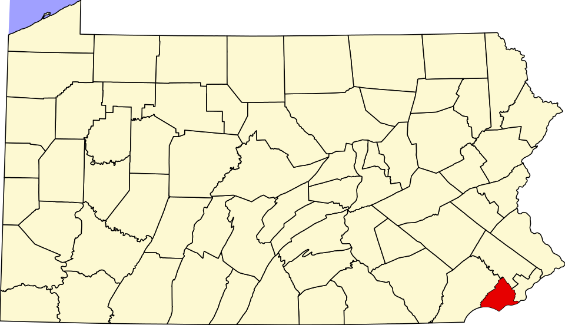

Delaware County, also known as Delco, is the third smallest-county in Pennsylvania by area, covering 191 square miles. The county seat is Media.
Created in 1789, Delaware County is in the Commonwealth of Pennsylvania and home to over 576,000 residents.
